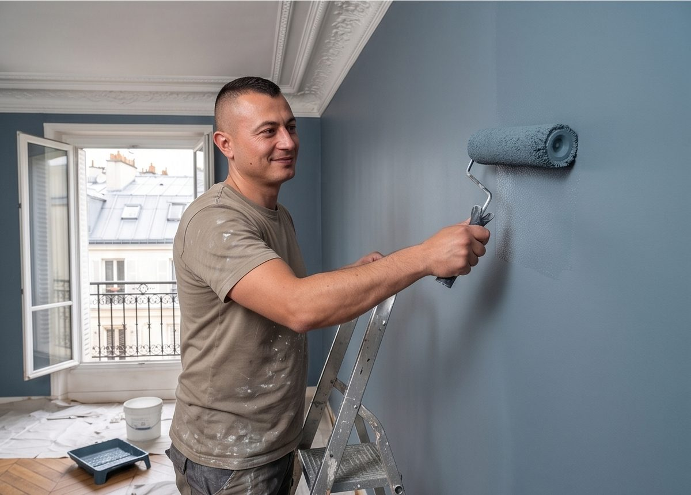
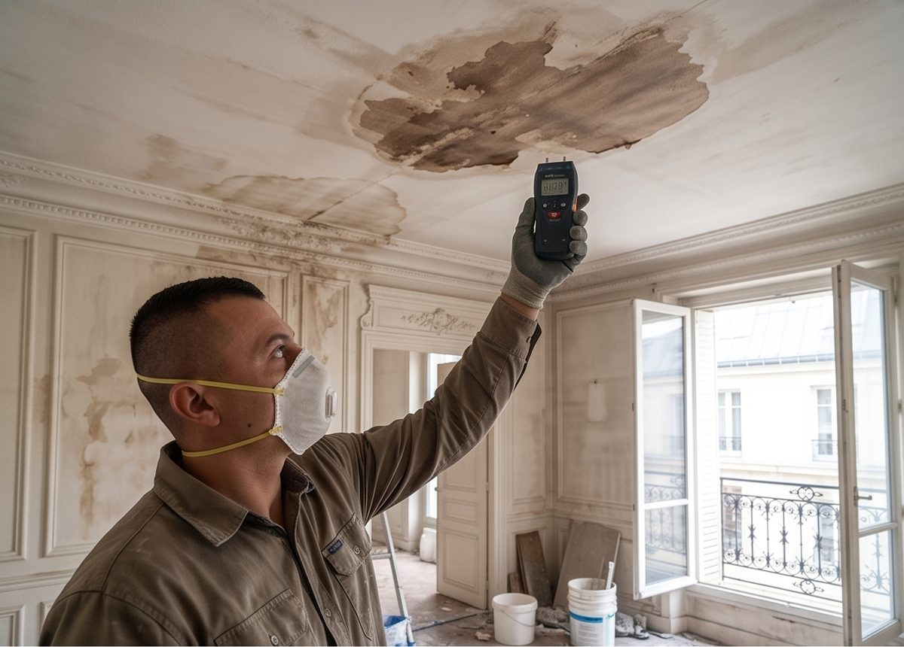

01Remise en état
Après une fuite ou un dégât des eaux
Remise en état des murs et plafonds une fois l'assèchement terminé : reprise des enduits, peinture, remplacement des sols abîmés. Que vous passiez ou non par votre assurance, devis détaillé sur demande.
Décrire le sinistre — première estimation possible à partir de photos
